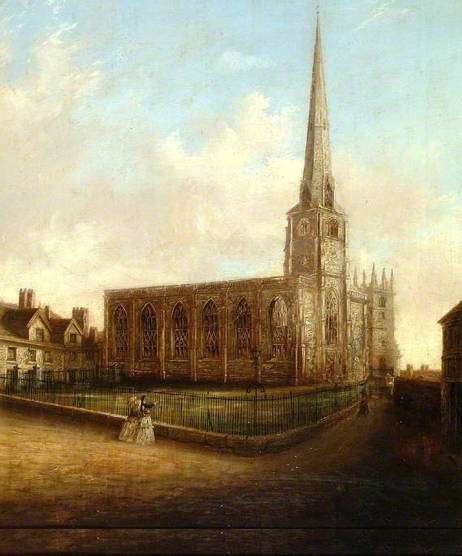

FINDING ÆTHELFLÆD, Lady of the Mercians
Æthelflæd, Lady of the Mercians may have been written out of history, but today we can find evidence of her life and achievements in many places.
SHREWSBURY, the “fort in the scrub’
There is uncertainty over the date of the development of Shrewsbury as an Anglo-Saxon ‘burh’ or fortified town. A charter indicates that Æthelflæd and her husband Æthelred met with the elders of Mercia by the upper Severn in 901AD at a place called Scrobbesburgh, or ‘fort in the scrub’, thought to be Shrewsbury. This date could be the founding of the town, but according to local tradition it was not finished until 912. What is certain is that Shrewsbury thrived thereafter as an easily defended hilltop town, surrounded by a tight loop of the Severn, and even boasted a mint. The location of the line of defences established for the town are unknown, but it is likely that Æthelflæd built a rampart across the ‘neck’ of the loop in the river, relying on the river to defend the other three sides.
When Æthelflæd founded St Alkmund’s church in Shrewsbury, she invested it with relics as she did with many of her churches. She retrieved the bones of Alkmund, a Northumbrian prince, from his resting place in Derby when she recaptured that town from the Danes in 917. To keep them safe and to bless the newly established town, she brought them to Shrewsbury.

Æthelflæd developed fortified towns like Shrewsbury as a key part of her strategy to re-take those parts of her territory occupied by the Danes. Sadly, her contribution has been largely overlooked, but I hope my historical novel, King Alfred’s Daughter can further promote her legacy by bringing this determined, courageous and compassionate woman to life. In the book, Shrewsbury was home to one of Æthelflæd’s ealdormen, Beornoth and this is how her initial meeting with him in her role as Lady of the Mercians is described:
‘By the time the vessels pulled slowly onto a rough wooden wharf at the foot of Shrewsbury’s hilltop settlement, Beornoth was waiting to greet us, resplendent in fur and gold ornaments and surrounded by a retinue of armed guards.
‘Welcome to Shrewsbury m’lady, although it is not a good time of year to appreciate our surroundings.’
I used to liken him to a weasel on account of his long thin body and sharp beady eyes. I had not seen him since a Danish axe had sliced into his skull and he had been thought to die. I felt some sympathy when I saw the red scar that ran down his face from forehead to cheekbone, a patch covering the place where his right eye used to be.
He still reminded me of a weasel.
‘We have reason to come at an unseasonable time, Lord Beornoth. We are urgently seeking your son, Beorhsige.’
The ealdorman gave a look of surprise or made a good attempt at feigning one. ‘Why, he has only just departed on urgent business to the north. Shall we shelter from this bitter weather?’ He indicated a pathway that wound upwards to a set of wooden buildings on the crest of the rise. ‘Will you be staying? Is there baggage to fetch?’
I glanced at Cenwulf who silently nodded his agreement to a halt. ‘That depends on what you have to tell us,’ I said, striding along the path.
‘There is a horse for you,’ Beornoth called after me. ‘My legs are too old to climb, so I will ride to the hall.’
‘I will walk. I have been sitting for too long,’ I said.
As I neared the summit, I stopped to look around. It was as Cenwulf had described: the River Severn made an almost complete loop around the hill, enclosing an area that was more than sufficient for a large town. Yet it contained only a few scattered huts in need of repair. The harbour would have to be improved and walls built to defend the unprotected north-eastern approaches, but Shrewsbury could be strengthened relatively easily. With new streets and buildings, it would make an ideal burh.’
— King Alfred’s Daughter, David Stokes, 2013